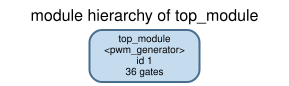
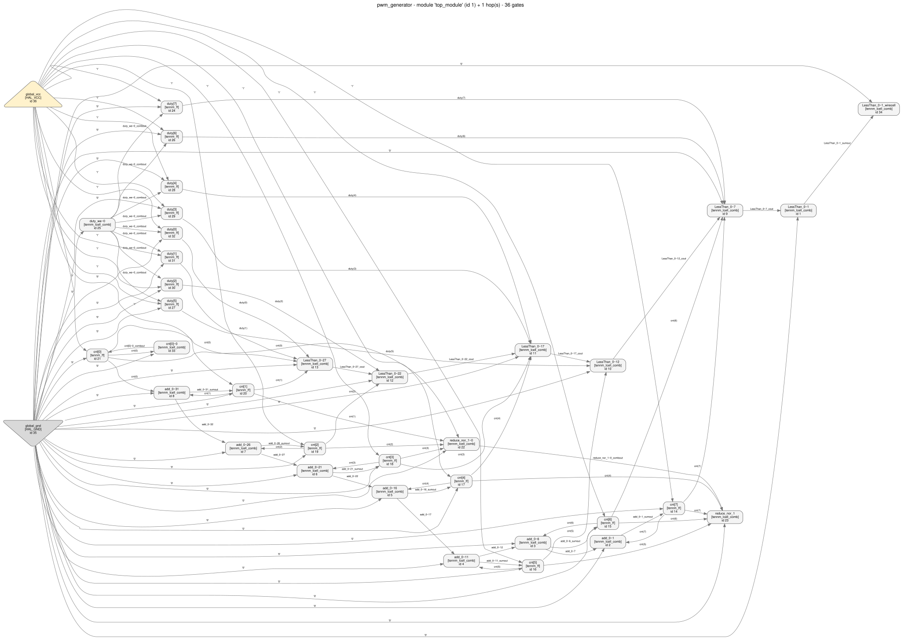
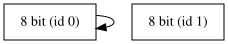
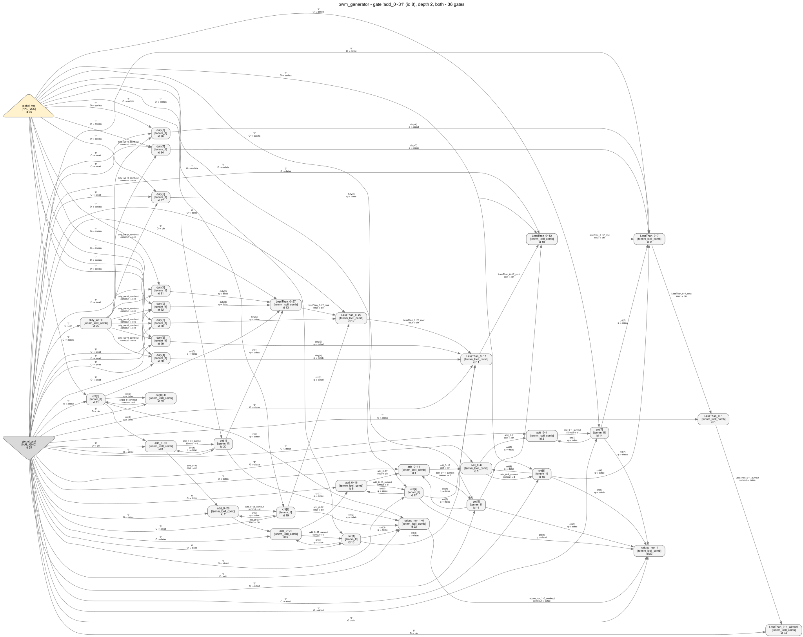
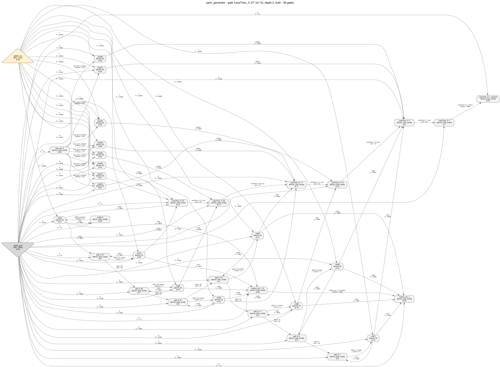
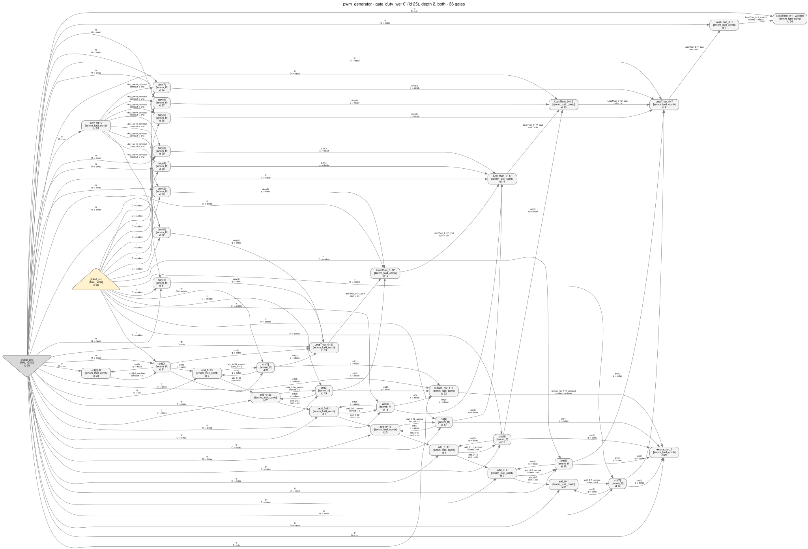

Reverse engineering an Agilex 3 netlist, step by step
Walkthrough 04 — an 8-bit PWM generator. From a Quartus Prime Pro
post-synthesis netlist back to readable RTL, using headless HAL and the tools in
tools/. Everything shown here was actually run; every image was
generated by the command printed above it.
An engineer who can read Verilog but has never taken a vendor netlist apart. You do not need to know the Agilex ALM. You do need to be comfortable running Python and reading a graph picture without panicking about how ugly it is.
Contents
1. What the design is
A pulse-width modulator. An 8-bit counter free-runs; an 8-bit duty register holds a threshold; the output is high while the counter is below the threshold. The threshold is written at run time through a tiny address-decoded write port. Full statement of intent: spec.md.
This is design.v, the file handed to Quartus — the answer sheet. Read it now if you want to follow along knowing the truth; skip it if you would rather try the recovery yourself first.
module pwm_generator (
input wire clk,
input wire rst_n,
input wire run,
input wire cfg_we,
input wire [1:0] cfg_addr,
input wire [7:0] cfg_wdata,
output wire pwm_out,
output wire period_tick
);
localparam [1:0] ADDR_DUTY = 2'b01;
reg [7:0] cnt;
always @(posedge clk or negedge rst_n) begin
if (!rst_n) cnt <= 8'h00;
else if (run) cnt <= cnt + 8'd1;
end
wire duty_we = cfg_we & (cfg_addr == ADDR_DUTY);
reg [7:0] duty;
always @(posedge clk or negedge rst_n) begin
if (!rst_n) duty <= 8'h00;
else if (duty_we) duty <= cfg_wdata;
end
assign pwm_out = (cnt < duty);
assign period_tick = (cnt == 8'hFF);
endmoduleThree things are worth noticing, because each one becomes a separate recovery problem later: the counter is a state machine with feedback, the comparator is a combinational cone over two registers, and the write enable is not a port — it is a decode of two ports.
2. Synthesis and export
The flow is the one tools/hal_agilex records and validates: Quartus Prime Pro
Edition 26.1, Agilex 3 device A3CW135BM16AE6S, synthesis only — the
fitter is never run, so the export is a clean post-synthesis snapshot with no placement noise.
Project files: quartus/pwm_generator.qsf,
quartus/pwm_generator.qpf,
quartus/build.tcl.
# from examples/agilex3_walkthroughs/04_pwm_generator/quartus
C:/altera_pro/26.1/quartus/bin64/quartus_syn.exe pwm_generator -c pwm_generator
C:/altera_pro/26.1/quartus/bin64/quartus_eda.exe --simulation --format=verilog \
--tool=questasim --output_directory=simulation pwm_generator -c pwm_generatorInfo (21057): Implemented 42 device resources after synthesis
Info (21058): Implemented 14 input pins
Info (21059): Implemented 2 output pins
Info (21061): Implemented 26 logic cells
Info: Quartus Prime Synthesis was successful. 0 errors, 1 warning
...
Info (204019): Generated file pwm_generator.vo in folder ".../simulation/"That produced netlist/pwm_generator.vo. HAL's Verilog
parser cannot read a Quartus .vo as-is — it contains tri1 supply nets,
inline ~x inversions on cell pins and unconnected output pins. The
hal_agilex import rewrites exactly those three things and refuses anything it
cannot rewrite exactly (inversions are absorbed into the LUT mask, which is a lossless
relabelling):
python tools/hal_agilex import \
examples/agilex3_walkthroughs/04_pwm_generator/netlist/pwm_generator.vo \
-o examples/agilex3_walkthroughs/04_pwm_generator/netlist/netlist.hal.vnetlist.hal.v is what HAL loads, with
plugins/gate_libraries/definitions/AGILEX_TENNM.hgl as the gate library.
Everything below is a property of this export. Quartus is free to pack the same
RTL differently on another version or device; if you regenerate the netlist, regenerate the
numbers with it. check.py in this directory exists so that a divergence is loud.
3. First contact with the netlist
Before any clever analysis: what is in the box? The primitive inventory runs on a plain Python interpreter, without HAL, and reports coverage rather than assuming it.
python tools/hal_agilex inventory \
examples/agilex3_walkthroughs/04_pwm_generator/netlist/pwm_generator.vo \
-o .../artifacts/findings-inventory.json"status": "proven_under_assumptions",
"summary": "All 34 instances are tennm_ff or tennm_lcell_comb, each in a
configuration this package models and has validated against the
vendor export.",
"histogram": { "tennm_ff": 16, "tennm_lcell_comb": 18 }Now load it in HAL. (HAL_BASE_PATH / HAL_PY_PATH point at the build;
all of the following ran inside the repo's build container.)
python3 examples/agilex3_walkthroughs/04_pwm_generator/artifacts/analyze.py --repo .design name : pwm_generator
gates : 36
nets : 56
modules : 1
HAL_GND 1
HAL_VCC 1
tennm_ff 16
tennm_lcell_comb 18
top module : top_module
submodules : 0
inputs : ['cfg_addr(0)', 'cfg_addr(1)', 'cfg_wdata(0)', 'cfg_wdata(1)', 'cfg_wdata(2)',
'cfg_wdata(3)', 'cfg_wdata(4)', 'cfg_wdata(5)', 'cfg_wdata(6)', 'cfg_wdata(7)',
'cfg_we', 'clk', 'rst_n', 'run']
outputs : ['period_tick', 'pwm_out']
elaborated : 18 lcell gates given boolean functions
checked ff : 16
refused : []- Two gate types. 18 six-input ALM cells and 16 flip-flops. Plus HAL's own
HAL_GND/HAL_VCC, which are not vendor cells — they materialise the1'b0/1'b1literals the export writes. - The port list survived. Ports are the one naming layer synthesis cannot throw away: the netlist has to connect to the outside world. 14 inputs, 2 outputs, and the vectors are still vectors.
- 16 flip-flops is the design's entire state. Whatever this thing is, it holds 16 bits.
- Hierarchy. There is one module and zero submodules. Synthesis flattened the design; "which block is which" is now a question about graph structure, not about names.
- Word boundaries. Nothing says these 16 flip-flops are two 8-bit registers rather than one 16-bit one, or sixteen unrelated bits.
- Function. A
tennm_lcell_combin the gate library carries no Boolean function at all — the ALM has ten input pins and three outputs whose meaning depends onlut_maskand on the mode, which HAL's generic LUT decoding cannot express. Functions are attached per gate after loading, byhal_agilex.hal_adapter.elaborate(). Until you call it, every cell is an opaque box.
The module tree is a one-node picture — and that is the finding
python tools/hal_viz module_tree .../netlist/netlist.hal.v \
--gate-library plugins/gate_libraries/definitions/AGILEX_TENNM.hgl \
-o .../images/module_tree.svg
The whole gate-level graph
36 gates is small enough to draw in one picture. This is a luxury: netlist_graph
refuses anything over --max-gates (default 400) because a full netlist is almost
never renderable.
python tools/hal_viz netlist_graph .../netlist/netlist.hal.v \
--gate-library plugins/gate_libraries/definitions/AGILEX_TENNM.hgl \
--module top_module -o .../images/netlist_graph.svg
Do not try to understand it. Look for shapes:
- a long, thin, almost-linear run of cells — that is a carry chain, and carry chains only exist where the RTL did arithmetic or a comparison;
- a bank of identical nodes with the same fan-in pattern — that is a register;
- a single node fanning out to many flip-flops — that is a control signal (clock, reset, or an enable), and if it is a LUT rather than a port, you have just found decode logic.
All three are present here. The rest of this walk is turning those three glances into claims you can defend.
4. The reverse-engineering walk
This export kept the original RTL identifiers: you will see cnt,
duty, add_0~31, LessThan_0~7. Treat them as
untrusted. Real targets are stripped, obfuscated or renamed, and a walkthrough that
leans on LessThan teaches nothing. Every conclusion below is derived from
structure and from lut_mask values; at the very end we check whether the names
agree, as a sanity test on the method rather than as evidence.
Step 1 — Find the state: group flip-flops by their control signature
Registers are where a design keeps its meaning. The cheapest word-recovery heuristic there
is: two flip-flops probably belong to the same register if they share a clock, an enable and a
reset. analyze.py prints exactly that grouping
(artifacts/02_ff_signatures.txt):
16 flip-flops, 2 distinct (clk, ena, clrn) signatures
clk=clk ena=run clrn=rst_n -> 8 flip-flops
cnt[0] d <- cnt[0]~0_combout q -> cnt(0)
cnt[1] d <- add_0~31_sumout q -> cnt(1)
cnt[2] d <- add_0~26_sumout q -> cnt(2)
cnt[3] d <- add_0~21_sumout q -> cnt(3)
cnt[4] d <- add_0~16_sumout q -> cnt(4)
cnt[5] d <- add_0~11_sumout q -> cnt(5)
cnt[6] d <- add_0~6_sumout q -> cnt(6)
cnt[7] d <- add_0~1_sumout q -> cnt(7)
clk=clk ena=duty_we~0_combout clrn=rst_n -> 8 flip-flops
duty[0] d <- cfg_wdata(0) q -> duty(0)
duty[1] d <- cfg_wdata(1) q -> duty(1)
duty[2] d <- cfg_wdata(2) q -> duty(2)
duty[3] d <- cfg_wdata(3) q -> duty(3)
duty[4] d <- cfg_wdata(4) q -> duty(4)
duty[5] d <- cfg_wdata(5) q -> duty(5)
duty[6] d <- cfg_wdata(6) q -> duty(6)
duty[7] d <- cfg_wdata(7) q -> duty(7)Two groups of eight, sharing clk and rst_n but with
different enables. That is the single most informative fact in the whole
netlist and it cost one pass over the gate list:
- the design holds two 8-bit words, not one 16-bit word;
- one word is enabled by a port (
run) — something the outside world turns on and off; - the other is enabled by a LUT output. An enable that has to be computed is almost always a write strobe with a condition on it — the condition is what you go and decode in step 8.
Step 2 — Cross-check the grouping with DANA
The hand grouping above is a heuristic. HAL ships an independent one:
dataflow_analysis (DANA) groups flip-flops by their control signals and by
the shape of their data cones, iterating until the grouping stops changing.
python tools/hal_viz dataflow .../netlist/netlist.hal.v \
--gate-library plugins/gate_libraries/definitions/AGILEX_TENNM.hgl \
-o .../images/dataflow -f svg[images/dataflow/groups.txt]
State:
ID:0, Size:8, CLK: {21}, EN: {23}, R: {22}, S: {}
Successors: {0}
Predecessors: {0}
cnt[7], type: tennm_ff, id: 14, RS:
cnt[6], type: tennm_ff, id: 15, RS:
cnt[5], type: tennm_ff, id: 16, RS:
cnt[4], type: tennm_ff, id: 17, RS:
cnt[3], type: tennm_ff, id: 18, RS:
cnt[2], type: tennm_ff, id: 19, RS:
cnt[1], type: tennm_ff, id: 20, RS:
cnt[0], type: tennm_ff, id: 21, RS:
ID:1, Size:8, CLK: {21}, EN: {75}, R: {22}, S: {}
Successors: {}
Predecessors: {}
duty[7], type: tennm_ff, id: 24, RS:
duty[6], type: tennm_ff, id: 26, RS:
duty[5], type: tennm_ff, id: 27, RS:
duty[4], type: tennm_ff, id: 28, RS:
duty[3], type: tennm_ff, id: 29, RS:
duty[2], type: tennm_ff, id: 30, RS:
duty[1], type: tennm_ff, id: 31, RS:
duty[0], type: tennm_ff, id: 32, RS:
Two independent methods agree on the same 8 + 8 split, so the word boundary is now well supported. That is the whole point of running DANA on a design you have already grouped by hand: agreement is evidence, disagreement is a bug hunt.
hal_viz dataflow only renders an image if you pass -f/--format
explicitly. Without it the analysis runs, writes graph.dot and
groups.txt, and then dies with
TypeError: can only concatenate str (not "NoneType") to str while naming the
image. Nothing is wrong with your netlist. Pass -f svg.
DANA also has no notion of which group is which, and no notion of bit order inside a group — its output is "these eight flip-flops belong together", nothing more. Bit order is recovered in steps 6 and 7, from the carry chains.
Step 3 — Which register feeds itself? Strongly connected components
A counter is a register that is a function of itself. On the gate graph that is a
cycle. Cycles are exactly what a strongly-connected-component search finds, and HAL's
graph_algorithm plugin (igraph) has one:
from hal_plugins import graph_algorithm
graph = graph_algorithm.NetlistGraph.from_netlist(netlist)
components = graph_algorithm.get_connected_components(graph, True, 2) # strong, min size 2strongly connected components with at least 2 vertices: 8
SCC 0: 2 gates {'tennm_ff': 1, 'tennm_lcell_comb': 1}
cnt[0]
cnt[0]~0
SCC 1: 2 gates {'tennm_lcell_comb': 1, 'tennm_ff': 1}
add_0~31
cnt[1]
SCC 2: 2 gates {'tennm_lcell_comb': 1, 'tennm_ff': 1}
add_0~26
cnt[2]
SCC 3: 2 gates {'tennm_lcell_comb': 1, 'tennm_ff': 1}
add_0~21
cnt[3]
SCC 4: 2 gates {'tennm_lcell_comb': 1, 'tennm_ff': 1}
add_0~16
cnt[4]
SCC 5: 2 gates {'tennm_lcell_comb': 1, 'tennm_ff': 1}
add_0~11
cnt[5]
SCC 6: 2 gates {'tennm_lcell_comb': 1, 'tennm_ff': 1}
add_0~6
cnt[6]
SCC 7: 2 gates {'tennm_lcell_comb': 1, 'tennm_ff': 1}
add_0~1
cnt[7]Every one of group A's flip-flops sits in a strongly connected component: eight of them, each a two-gate cycle pairing one flip-flop with the single combinational cell that computes its next value. Their next value depends on their current value. Group B's flip-flops are in no component at all — nothing they drive comes back to them. So:
- Group A is state that evolves — a counter, an accumulator, an LFSR or a state register.
- Group B is state that is written — a configuration or data register. Its value comes from outside and stays until overwritten.
Note that the counter is not one big component. Carry flows one way along the chain, so nothing links bit i's loop back to bit j's, and you get eight disjoint two-gate cycles rather than one large component. Eight small cycles that all land in the same flip-flop group is the same finding.
This split (feedback vs. no feedback) is the fastest way to tell a datapath register from a control register, and it needs no Boolean reasoning whatsoever.
Step 4 — Follow the carry chains
The Agilex ALM has a dedicated carry output (cout) that can only go to the
cin of another ALM. That makes carry chains trivial to recover exactly — walk
cout → cin — and extremely informative, because the synthesizer only builds them
for addition, subtraction and comparison.
2 carry chain(s) found by following cout -> cin
chain 0: 6 cells
[0] LessThan_0~27 mask=000000004D449009
inputs : dataa=cnt(1), datab=duty(1), datac=cnt(0), datad=duty(0)
drives : cout->LessThan_0~22.cin
[1] LessThan_0~22 mask=0000000000F0F00F
inputs : datac=duty(2), datad=cnt(2)
drives : cout->LessThan_0~17.cin
[2] LessThan_0~17 mask=000000004D449009
inputs : dataa=cnt(4), datab=duty(4), datac=cnt(3), datad=duty(3)
drives : cout->LessThan_0~12.cin
[3] LessThan_0~12 mask=0000000000F0F00F
inputs : datac=duty(5), datad=cnt(5)
drives : cout->LessThan_0~7.cin
[4] LessThan_0~7 mask=000000004D449009
inputs : dataa=cnt(7), datab=duty(7), datac=cnt(6), datad=duty(6)
drives : cout->LessThan_0~1.cin
[5] LessThan_0~1 mask=000000000000FFFF
inputs : (all constant)
drives : sumout->LessThan_0~1_wirecell.dataa
chain 1: 7 cells
[0] add_0~31 mask=00000000F0000FF0
inputs : datac=cnt(1), datad=cnt(0)
drives : sumout->cnt[1].d, cout->add_0~26.cin
[1] add_0~26 mask=000000000000F0F0
inputs : datac=cnt(2)
drives : sumout->cnt[2].d, cout->add_0~21.cin
[elided: chain 1 cells [2], [3], [4] -- add_0~21, add_0~16, add_0~11, each
identical to [1] with datac = cnt(3), cnt(4), cnt(5), each driving that bit's
flip-flop d pin and the next cell's cin]
[5] add_0~6 mask=000000000000F0F0
inputs : datac=cnt(6)
drives : sumout->cnt[6].d, cout->add_0~1.cin
[6] add_0~1 mask=000000000000F0F0
inputs : datac=cnt(7)
drives : sumout->cnt[7].dTwo chains, and they have completely different shapes:
- Chain A takes its data from group A's outputs and its
sumouts go straight back into group A'sdpins. Register → logic → same register. These are seven of the eight two-gate cycles the SCC search in step 3 found (the eighth is the bit-0 cell, which is not on a chain). It is an incrementer or an accumulator. - Chain B takes data from both register groups, and — the giveaway
— not one of its carry-producing cells has its
sumoutconnected. The only thing that leaves the chain is the carry, tapped at the very top through a terminator cell (step 7). A chain whose sums are all thrown away and whose carry is kept is not computing a value; it is computing a relation. That is a magnitude comparator.

python tools/hal_viz netlist_graph ... --gate add_0~31 --depth 2 —
the bottom of chain A. The feedback into the same flip-flops is the visual signature of a
counter.
python tools/hal_viz netlist_graph ... --gate LessThan_0~27 --depth 2 —
the bottom of chain B: two registers in, one carry out, no sum used.Step 5 — Ask the recognizer, and read its refusal
tools/hal_agilex recognize knows one arithmetic pattern: a ripple-carry adder or
accumulator, checked by matching each cell's lut_mask against the
propagate/generate pair of a full-adder bit slice. On this design it comes back empty:
"status": "unknown",
"title": "No carry-chain adder recognized",
"summary": "2 carry chain(s) were followed and none matched the ripple-carry adder
pattern; this says nothing about what the design computes.",
"data": { "rejected": [ "cell add_0~26 is not an arithmetic slice",
"cell LessThan_0~27 is not an arithmetic slice" ] }This is a true negative reported honestly, not a failure to try, and the reason field tells you what to do next:
- chain A is rejected because its slices are not two-operand full
adders. An increment has one operand and a constant, so Quartus emits slices whose generate
half is empty (mask
…0F0F: propagate = one data pin, generate = 0). The recognizer's pattern simply does not include increment slices. - chain B is rejected because a comparator slice is not an adder slice at all —
Quartus packs two bit-pairs per ALM here (mask
…22B29009), which no full-adder mask can look like.
The workaround is the rest of this section: decode the masks yourself. The lesson to take
away is that a recognizer's unknown is a statement about the recognizer, and its
rejected list is a map of what to go and read by hand.
Step 6 — Decode chain A: it is +1
Now attach semantics. hal_agilex.hal_adapter.elaborate() reads each
lut_mask and adds the corresponding Boolean function to the gate; the arithmetic
form it uses is the one Quartus itself prints next to every instance in the export:
f0 = lut_mask[ a + 2b + 4c + 8d ] (bits 0..15) "propagate"
f1 = lut_mask[ 16 + a + 2b + 4c + 8d ] (bits 16..31) "generate"
sumout = f0 XOR cin
cout = (f0 AND cin) OR (NOT f0 AND f1).vo
The raw export drives several cell pins through inline inversions
(.datac(~cnt[7])). HAL's parser cannot represent those, so the import
absorbs each inversion into the mask — mask bit j moves to
j XOR (1<<i), an exact relabelling. So the same cell reads
64'h0000000000000F0F in pwm_generator.vo and
64'h000000000000F0F0 in netlist.hal.v. Same function, different
bookkeeping; quote whichever file you are actually looking at, and never compare masks across
the two.
Chain A's cells, bottom to top (full listing in artifacts/04_boolean_functions.txt):
[chain-A cells, bottom to top: functions from artifacts/04_boolean_functions.txt,
masks and wiring from artifacts/03_carry_chains.txt and netlist/netlist.hal.v]
add_0~31 mask=00000000F0000FF0 datac=cnt(1) datad=cnt(0) cin=gnd
cout = ((datac & datad) | (cin & (datac | datad)))
sumout = ((cin & ((datac & datad) | ((! datac) & (! datad)))) | ((! cin) & ((datac | datad) & ((! datac) | (! datad)))))
add_0~26 mask=000000000000F0F0 datac=cnt(2)
cout = (cin & datac)
sumout = ((cin | datac) & ((! cin) | (! datac)))
[elided: add_0~21, add_0~16, add_0~11, add_0~6 -- the same mask 000000000000F0F0
and character-for-character the same two functions as add_0~26, with
datac = cnt(3), cnt(4), cnt(5), cnt(6) respectively]
add_0~1 mask=000000000000F0F0 datac=cnt(7)
sumout = ((cin | datac) & ((! cin) | (! datac)))
[no cout line: this is the top of the chain and nothing reads its carry]
[the bit-0 cell, which is on no chain at all]
cnt[0]~0 mask=5555555555555555 dataa=cnt(0)
combout = (! dataa) combout -> cnt[0].d- The bottom cell has
cin = gndand two data inputs — the two least significant bits of group A. Its propagate half isa XOR band its generate half isa AND b: a half-adder over bits 0 and 1. - Every cell above it has one data input and generate = 0, so
cout = data AND cinandsumout = data XOR cin. That is the carry rule for adding a constant 1: the carry survives only through a run of ones. - Bit 0 is not on the chain at all. It is a separate one-input LUT
(
lut_mask = 64'h5555…, i.e.combout = !dataa) whose input and destination are the same flip-flop. Toggle-on-every-clock is the increment of bit 0 — and it is also how you identify bit 0 without trusting any name.
Together: next = value + 1, on an 8-bit word, enabled by run,
asynchronously cleared to zero. Group A is a free-running 8-bit counter.
The chain also hands you something DANA cannot: bit order. Carry flows from least to most significant, so the position of a flip-flop's bit in the chain is its index.
Step 7 — Decode chain B: it is an unsigned <
Chain B has six cells: five that produce a carry, and one on top that only taps it. The elaborated functions of the carry-producing cells come in two flavours:
[chain-B cells, bottom to top: functions from artifacts/04_boolean_functions.txt,
masks and wiring from artifacts/03_carry_chains.txt and netlist/netlist.hal.v]
two-bit slices mask=000000004D449009
LessThan_0~27 dataa=cnt(1) datab=duty(1) datac=cnt(0) datad=duty(0) cin=gnd
LessThan_0~17 dataa=cnt(4) datab=duty(4) datac=cnt(3) datad=duty(3)
LessThan_0~7 dataa=cnt(7) datab=duty(7) datac=cnt(6) datad=duty(6)
cout = (((! dataa) | datab) & (((! dataa) & datab) | ((cin | datad) & ((! datac) | (cin & datad)))))
one-bit slices mask=0000000000F0F00F
LessThan_0~22 datac=duty(2) datad=cnt(2)
LessThan_0~12 datac=duty(5) datad=cnt(5)
cout = ((datac & (! datad)) | (cin & (datac | (! datad))))
top of the chain mask=000000000000FFFF
LessThan_0~1 (all data inputs constant; cin from LessThan_0~7.cout)
sumout = (! cin)
readout cell, off the chain mask=5555555555555555
LessThan_0~1_wirecell dataa=LessThan_0~1.sumout -> output pwm_out
combout = (! dataa)Write each cell as cout = P·cin + !P·G (that is just the ALM's carry equation).
Then read what Quartus put in P and G:
- P is an equality test on this cell's bits:
P = (a == b)for the one-bit cells, andP = (a1==b1) AND (a0==b0)for the two-bit ones. - G is a strict less-than on the same bits:
G = !a AND b(extended to the two-bit case).
So each cell says: "if my bits are equal, pass the verdict from below; otherwise decide
it here". That recursion, seeded with cin = gnd at the bottom (nothing below,
so "not less"), and read out at the top, is precisely the unsigned comparison
A < B, where A is the register the !a comes from and B is the other.
Which operand is which is decided by the polarity in G, and it is the only thing you must get
right to avoid recovering > instead of <.
The top of the chain is a decoy: LessThan_0~1 has lut_mask = …FFFF,
so its propagate half is constant 1 and sumout = 1 XOR cin = !cin; it then feeds a
one-input LUT whose function is also an inversion. Two inversions in a row cancel. That pair is
a routing artefact of the vendor's chain termination, not logic — and mistaking it for logic is
how you end up recovering an inverted output.
Also note what the comparator gives you for free: it reads bit i of group A against bit i of group B. Group A's bit order came from the counter chain in step 6, so this chain transfers that order onto group B. Bit order for both registers is now pinned.
Step 8 — Recover the write path
Back to the loose end from step 1: group B's enable is a LUT, not a port. There is exactly one such cell, and elaboration prints its function directly:
[artifacts/04_boolean_functions.txt]
duty_we~0 combout = ((! datac) & (dataa & datab))
[wiring and mask from netlist/netlist.hal.v -- lut_mask 64'h0808080808080808]
dataa = cfg_we datab = cfg_addr[0] datac = cfg_addr[1]
combout -> the ena pin of duty[0] .. duty[7], and nothing else
[artifacts/02_ff_signatures.txt -- the second signature group, d pins]
clk=clk ena=duty_we~0_combout clrn=rst_n -> 8 flip-flops
duty[0] d <- cfg_wdata(0) q -> duty(0)
[elided: duty[1] .. duty[6], each d <- cfg_wdata(i), q -> duty(i)]
duty[7] d <- cfg_wdata(7) q -> duty(7)
python tools/hal_viz netlist_graph ... --gate duty_we~0 --depth 2 —
one 3-input LUT fanning out to eight ena pins. The shape alone identifies it as a
write strobe before you decode a single mask.- The enable is
cfg_we AND cfg_addr[0] AND NOT cfg_addr[1]. One strobe port, one 2-bit field, and a match against the constant01: this is an address decode, and the register lives at address 1. - The
dpins of group B are driven directly bycfg_wdata[7:0]— no logic in between, and index for index. So the write is a plain 8-bit load, not a shift, a mask or an increment. - Nothing in the netlist decodes addresses
00,10or11. Either they were never used, or their registers were optimised away because nothing read them. You cannot tell which from the netlist — say so, rather than claiming the address map has one entry.
Step 9 — Account for the second output
Two flip-flop groups and two chains are accounted for. Two ALMs are left over, and one output port is still unexplained. What drives it?
[artifacts/06_output_cones.txt]
output period_tick
driven by reduce_nor_1.combout (tennm_lcell_comb)
combout = ((dataa & datab) & (datae & (datac & datad)))
output pwm_out
driven by LessThan_0~1_wirecell.combout (tennm_lcell_comb)
combout = (! dataa)
[artifacts/04_boolean_functions.txt -- the second reduce cell, the one that
drives reduce_nor_1's datae pin]
reduce_nor_1~0 combout = ((dataa & datab) & (datac & datad))
[wiring and masks from netlist/netlist.hal.v]
reduce_nor_1~0 mask=8000800080008000
dataa=cnt[3] datab=cnt[2] datac=cnt[1] datad=cnt[0]
reduce_nor_1 mask=8000000080000000
dataa=cnt[7] datab=cnt[6] datac=cnt[5] datad=cnt[4]
datae=reduce_nor_1~0_combout -> output period_tickAn AND over group A's low four bits, then an AND of that with the high four bits: an
8-input AND reduction, split across two ALMs because a six-input cell cannot take eight inputs.
output = (A == 8'hFF). On a free-running counter that is the last count of every
period — a period marker.
The accounting is the point of this step: 7 + 6 + 2 + 1 (bit-0 toggle) + 1 (chain-B inverter) + 1 (decode) = 18 ALMs, 8 + 8 = 16 flip-flops. Every gate has a job. If your count does not close, you have missed a function — and missed functions are exactly where hardware trojans and undocumented debug paths live.
Step 10 — Test the hypothesis against the netlist
The recovery so far is a story. Turn it into a model and let a simulator try to break it.
artifacts/recovered_reference.py is that model,
written from the recovered structure only, and tools/hal_agilex behavior simulates
the exported netlist against it with the validated primitive semantics:
python tools/hal_agilex behavior .../netlist/pwm_generator.vo \
--reference .../artifacts/recovered_reference.py \
-o .../artifacts/findings-behavior.json"status": "proven_bounded",
"title": "The exported netlist matches the reference model for 200 cycles",
"summary": "200 pseudo-random cycles, including asynchronous clears, agree with the
reference model. Nothing is claimed beyond that bound."200 random cycles is a weak bound for a comparator: random stimulus rarely lands on the
interesting boundary A == B. So check.py drives the netlist
directly — every one of the 256 threshold values, each against a full 256-count period:
$ python examples/agilex3_walkthroughs/04_pwm_generator/check.py
walkthrough 04 -- pwm_generator
[1] primitive coverage
ok 18 tennm_lcell_comb
ok 16 tennm_ff
ok no uncovered primitive
ok no out-of-coverage configuration
[2] import rewrite is reproducible
ok netlist.hal.v matches a fresh rewrite
[3] structure
ok exactly two carry chains
ok chain lengths are 6 and 7
ok two flip-flop enable groups
ok both groups are 8 bits wide
ok one group is enabled by a LUT, not a port
[4] behaviour vs the recovered model (200 pseudo-random cycles)
ok no counterexample
ok cycles simulated
[5] pwm_out == (cnt < duty) over all 65536 (cnt, duty) pairs
ok pwm_out agrees for all 65536 pairs
ok period_tick agrees for all 65536 pairs
[6] duty is only writable at cfg_addr == 2'b01
ok address 00 is ignored
ok address 10 is ignored
ok address 11 is ignored
[7] every comparator slice is (equality -> propagate, less-than -> generate)
ok one chain reads both registers
ok slice LessThan_0~27: propagate = equal, generate = (counter < threshold)
ok slice LessThan_0~22: propagate = equal, generate = (counter < threshold)
ok slice LessThan_0~17: propagate = equal, generate = (counter < threshold)
ok slice LessThan_0~12: propagate = equal, generate = (counter < threshold)
ok slice LessThan_0~7: propagate = equal, generate = (counter < threshold)
ok all comparator slices checked
24 checks, 0 failedSection 7 of that run is the structural half of the same claim: for every carry-producing
cell of chain B it enumerates the cell's own truth table out of lut_mask and
requires the propagate half to be exactly "these bits are equal" and the generate half to be
exactly "the counter's bits are below the threshold's" — the reasoning of step 7, restated as
something a machine re-derives.
65 536 exhaustive comparisons pin the comparator's direction and its boundary
(<, not <=) beyond argument, and the addressing test shows the
decode really rejects the other three addresses. It is still a claim about the
modelled primitive semantics, not about silicon — which is why the finding says
proven_bounded and not proven. Know which one you are holding.
5. Reconstruction — and what was lost
Here is recovered.v, written from the netlist alone. Names are deliberately neutral: the export happens to carry the original identifiers, and none of the reasoning above used them.
module recovered_top (
input wire clk,
input wire rst_n,
input wire run,
input wire cfg_we,
input wire [1:0] cfg_addr,
input wire [7:0] cfg_wdata,
output wire pwm_out,
output wire period_tick
);
reg [7:0] reg_a; // group A: ena = run
reg [7:0] reg_b; // group B: ena = decode
wire reg_b_load = cfg_we & cfg_addr[0] & ~cfg_addr[1]; // from the decode LUT mask
always @(posedge clk or negedge rst_n) begin
if (!rst_n) reg_a <= 8'h00;
else if (run) reg_a <= reg_a + 8'd1; // chain A
end
always @(posedge clk or negedge rst_n) begin
if (!rst_n) reg_b <= 8'h00;
else if (reg_b_load) reg_b <= cfg_wdata; // direct d-pin wiring
end
assign pwm_out = (reg_a < reg_b); // chain B
assign period_tick = (reg_a == 8'hFF); // the two reduce LUTs
endmoduleRecovered exactly
| Thing | Recovered from |
|---|---|
| Port names, directions, widths | the export's port list — synthesis cannot rename the boundary |
| Two 8-bit registers, and which flip-flop is in which | control-signature grouping, confirmed by DANA |
| Bit index of every flip-flop | carry order in chain A, carried over to group B by chain B |
Asynchronous, active-low reset to 0 | clrn pin of every tennm_ff |
| Enable semantics of both registers | ena pins; one port, one decode LUT |
Counter is +1, wrapping, 8 bits | chain A masks + the bit-0 toggle LUT |
| Comparison is unsigned, strict, and in that operand order | chain B propagate/generate pairs; 65 536-case simulation |
Write is a full 8-bit load at address 2'b01 | decode LUT mask + direct d wiring |
period_tick = (A == 255) | the two AND-reduce masks |
Lost, and not recoverable from this netlist
| Lost | Why, and what you can say instead |
|---|---|
| Hierarchy and module names | Flattened by synthesis. There is no evidence the counter and the comparator were ever separate blocks. Recovered blocks are your partition, not the author's. |
| Internal signal names | They survive here only because Quartus kept RTL identifiers. Assume they will not: a stripped or obfuscated netlist gives you n1247. Nothing above depended on them. |
| Intent | The netlist proves out = (A < B) with A a free-running counter. That it is a PWM duty cycle, that B is a threshold in 1/256 units, that period_tick is meant for downstream logic — all of that is interpretation. Label it as such. |
| Named constants | localparam ADDR_DUTY = 2'b01 is now the literal 01 inside a mask. Symbolic names never reach the netlist. |
| Coding style | Whether the author wrote one always block or two, blocking or non-blocking, a < or a subtract-and-test — unknowable. Many RTLs map to this netlist. |
| Unused address space | Three decoded addresses do nothing. Whether the original had registers there that were optimised away, or never had any, cannot be told apart from the netlist. |
| Reset values other than zero | Here every register clears to 0, which is what clrn does. A design resetting to a non-zero constant would show up as inverted flip-flop outputs — a real trap, and one this design does not spring. |
| Timing intent | pwm_out is combinational out of a register. Whether the author meant to register it is a design question the netlist cannot answer. |
The honest comparison against design.v
Line for line, recovered.v and design.v describe the same machine:
same ports, same widths, same reset, same enables, same increment, same comparison, same decode,
same period flag. What differs is everything a human put there and a compiler dropped —
cnt vs. reg_a, ADDR_DUTY vs. 01, comments,
and the claim in the file header that the thing is a PWM at all.
That is the realistic outcome of netlist RE on a small design: the behaviour comes back exactly and is checkable; the vocabulary does not come back at all.
6. Going further
- Re-run the checks.
python examples/agilex3_walkthroughs/04_pwm_generator/check.pyneeds no HAL build and no Quartus — it re-asserts the structural and behavioural claims of this guide in a few seconds. - Break the design and watch the tools react. Change
<to<=indesign.v, re-synthesise, and see which mask bits move. Change the counter to+3and watch the generate halves stop being empty — at which pointhal_agilex recognizestarts matching. - Make DANA work for its money. Two registers with different enables is easy. Give both registers the same enable, or split the counter into two halves that are written independently, and the grouping starts to disagree with the hand analysis. That disagreement is the interesting case.
- Teach the recognizer the increment slice.
hal_agilex.recognize.classify_arithmetic_cellis where the full-adder pattern lives; a one-operand slice (generate = 0) is a small, well-scoped addition, and this walkthrough is its test case. - Try a post-fit export. Everything here is post-synthesis. Fitting adds IO buffers and placement artefacts, and those are outside the modelled primitive coverage — the inventory will tell you exactly which primitives it refuses, which is the honest starting point for extending the coverage.
- Scale the same method up. Group flip-flops → find the cycles → walk the carry chains → decode the masks → account for every gate → simulate the hypothesis. Nothing in that sequence depended on the design being tiny; only the "draw the whole netlist" step did.
Files in this directory: design.v (original RTL),
spec.md (intended behaviour), quartus/ (project + build script),
netlist/ (the .vo export and the HAL-importable rewrite),
recovered.v (the reconstruction), check.py (headless assertions),
artifacts/ (every tool output quoted above), images/ (every figure).